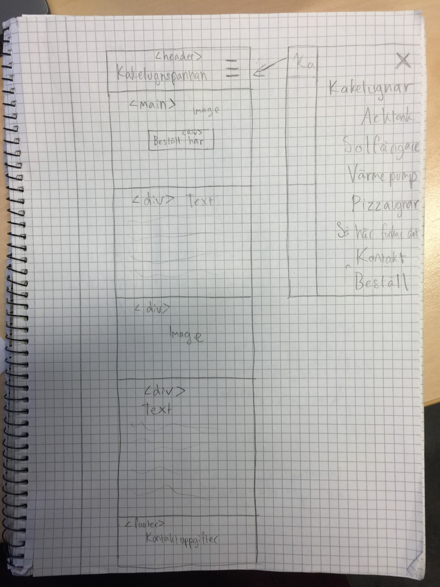

Dokumentation projekt Vt
1. Idébeskrivning
Anders Andersson och Bruno Rossi är egenföretagare som äger företaget Kakelugnspannan. Företaget säljer både
kakelugnar och pizzaugnar till privatpersoner, och har var sin hemsida dedikerad till detta. Hemsidan till
pizzaugnarna har inget behov av att uppdateras då den är nygjord med god design, dock känner de båda att
hemsidan för kakelugnar skulle behöva en uppdatering. Den har nog inte uppdaterats sedan ~2010 och har många
brister såsom att den inte är mobilanpassad samt flera andra designfel, vilket de skulle vilja ha fixat.
Deras målgrupp är framförallt medelålders människor som tänker skaffa hus eller redan äger ett hus. GSD-mallen
där min målgruppsundersökning har gjorts över denna målgrupp finns
här
Nästan hela designen från den gamla sidan har redan ändrats
vilket man kan se här. Dock kommer
jag behöva
designa en desktop version av denna designen som kommer att ändra upplägget en del, särskilt på menyn.
2. Planering
2.1 Handskiss
Skissen jag gjorde innan GSD-projektet

Färdiga prototypen är här: https://www.figma.com/file/AnLO4sMpHGmmZbohOqg5rZ/Kakelugnspannan?node-id=0%3A1
2.2 Schema
| Vecka |
På lektionen |
Utanför lektionen |
| 4 |
Planerar och skissar
|
Smådetaljer med menyn
|
| 5 |
Mer än halvvägs med menyn
|
Gör färdigt mobil-menyn
|
| 6 |
Försöker komma halvvägs med startsidan
|
Gör färdigt startsidan (helst)
|
| 7 |
LOV
|
LOV
|
| 8 |
Gör färdigt startsidan, börja på kakelugns-sidan
|
Arbeta på kakelugns-sidan
|
| 9 |
Fortsättning av kakelugns-sidan
|
Slutförande av kakelugns-sidan
|
| 10 |
Arbeta på tillbehör-sidan
|
Slutförning av tillbehör-sidan
|
| 11 |
Kontakta oss-sidan
|
Slutförning av kontakta oss-sidan
|
| 12 |
Tester, finjustering osv.
|
Slutföra hemsidan
|
3. Dokumentation
Lektion vecka 4
Jag började att programmera och mixtra med headern på framsidan, skrev färdigt idébeskrivningen & lade in skisser på
prototypen.
Lektion vecka 5
Fixade nästan färdigt hela headern och lade till så att naven till mobilen går att öppna och stänga. Började lägga
till items i menyn och en knapp, kommer förmodligen ändras mer så att den funkar i ännu mindre storlekar än en
mobil. Mycket finslipning så att det blir samma som i figma, fixade flera smådetaljer men det är fortfarande många
kvar.
Lektion vecka 6
Gjorde färdigt menyn (men kanske lägger till animationer i efterhand) och började arbeta på innehållet på framsidan
genom att lägga in all text och bild.
Lektion vecka 8
Nästan hela startsidan slutfördes (tex footern) förutom de två knapparna som ska ha en bild som bakgrund och text
över med en ruta med opacity 70% vilket jag inte lyckades få till under lektionen. Även en animation på menyn
adderades.
Lektion vecka 9
Alla delsidorna skapades och mycket av innehållet adderades till kakelugns-sidan. Behöver fortfarande fixa knappen
på startsidan, och beställ- samt "se specifikationer"- knapparna till kakelugnssidan.
Lektion vecka 10
Sjuk
Lektion vecka 11
Hade problem med knapparna på kakelugns-delsidan då pilen som pekar nedåt samt texten som ska vara precis ovanför
vägrade att lägga sig rätt vilket gjorde att jag testade runt nästan hela lektionen tyvärr :(
Lektion vecka 12
Update 1: Speedrun av hemsidan har börjat. Startsidan samt kakelugn-sidan har slutförts, tillbehör- och beställ-
sidorna kvarstår samt sedan datoranpassning.
Update 2: Beställ- och tillbehör- delsidan har färdigställts. Endast datoranpassning kvarstår.
Update 3: DATORANPASSNING FÄRDIGGJORT!!! WOO! Ändrade på bilderna i kakelugns-sidan så att de är samma storlek
dessutom.
Update 4: Testning, validering utvärdering. hjälp....
4. Testning
Har testat väldigt mycket under utvecklingsperioden och behövt ändra en del grejer vilket tagit ganska lång tid.
Webbläsarna har dock lyckats få samma resultat av vad jag har testat. Valideringen ville att jag skulle lägga till
en del alts till bilder som jag inte hade orkat göra, sedan klagade den på några sections då de inte hade någon
h1-6. En annan grej som jag valde att inte fixa var att den inte ville ha p inuti button (hade förstört min design
annars). Contrastchecker funkar bra, den vill gärna ha lite mer mellan orange och svart men den gick igenom testet.
Både på webbläsarens versionen av en mobil och tester genom en mobil (lade upp hemsidan) har funkat felfritt så vitt
jag vet.
5. Utvärdering
Har blivit relativt nöjd med resultatet. Behövt ta genvägar dock på vissa ställen som inte riktigt har gått ihop
annars vilket jag helst inte hade velat (syftar på vissa knappar), men när man har tidsbrist så har man tidsbrist.
Har insett nu i efterhand att jag säkert kunnat använda samma kod som i herotext till knapparna på startsidan, men
är lite för sent för det.
Något som jag borde ha tänkt på framförallt är att faktiskt hålla mig till planeringen, men har svårt att jobba
hemifrån om det inte är under tidspress, vilket gör att det som inte görs på lektionen görs lektionen därefter. Om
jag istället hade hållt mig till schemat så hade resultatet troligtvis blivit mer tillfredsställande, och koden hade inte blivit lika kaosig
som den är nu. Hade säkert hunnit att komma på en annan design till dator-versionen av tillbehör delsidan som bättre
passar, genom att kanske kolla på andra liknande designer. Framsidan för datorn känns också lite skev så den hade
jag kunnat förbättra med knapparna bland annat och kanske mixtrat mer med fontstorlekar och margin & storlekar på
bilder. Hade gärna haft bättre bilder men min pappa (företag-ägaren) har tyvärr knappt några bra...
Generellt om jag hade hoppat över de sakerna jag fastnade i tills vidare hade allt troligtvis hållt sig mer till
schemat. Men på tal om schemat så verkar det se bra ut, men jag hade helt glömt av att räkna med att jag behövde
göra datorhemsidan. Troligtvis så räknade jag med det, men tänkte att jag skulle göra datordelsidan direkt efter
mobildelsidan (vilket jag inte gjorde). Detta kunde jag nog undvikt genom att vara tydligare i schemat.